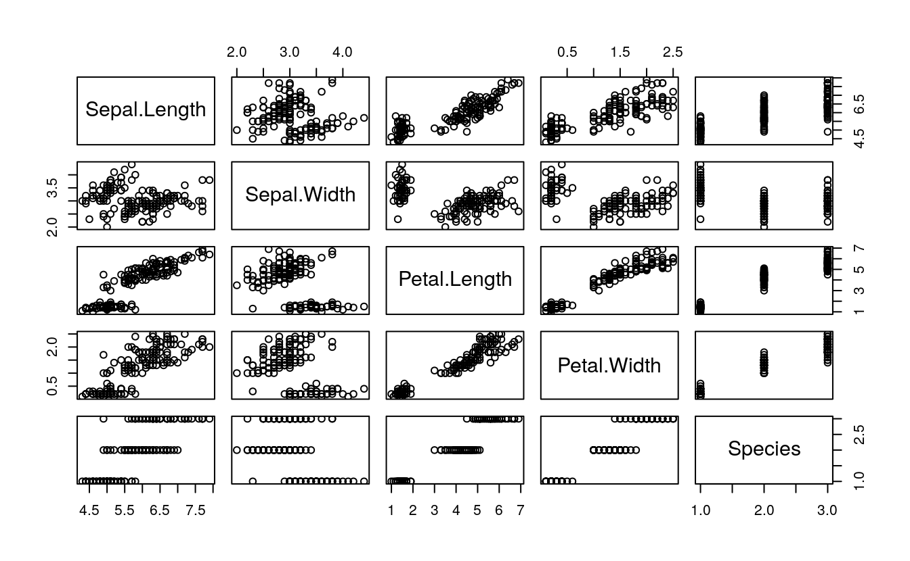
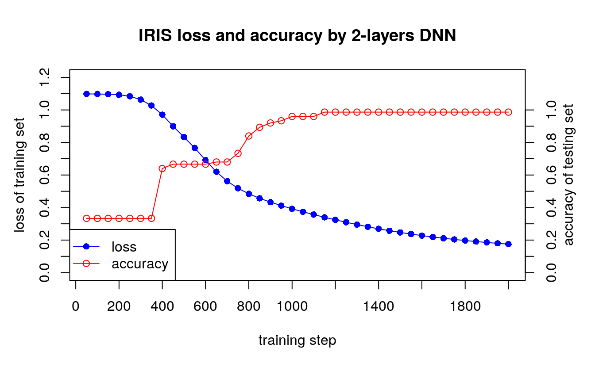

44 Build a fully connected R neural network from scratch
44.1 Introduction
http://www.parallelr.com/r-deep-neural-network-from-scratch/
library(neuralnet)
# Copyright 2016: www.ParallelR.com
# Parallel Blog : R For Deep Learning (I): Build Fully Connected Neural Network From Scratch
# Classification by 2-layers DNN and tested by iris dataset
# Author: Peng Zhao, patric.zhao@gmail.com
# Prediction
predict.dnn <- function(model, data = X.test) {
# new data, transfer to matrix
new.data <- data.matrix(data)
# Feed Forwad
hidden.layer <- sweep(new.data %*% model$W1 ,2, model$b1, '+')
# neurons : Rectified Linear
hidden.layer <- pmax(hidden.layer, 0)
score <- sweep(hidden.layer %*% model$W2, 2, model$b2, '+')
# Loss Function: softmax
score.exp <- exp(score)
probs <-sweep(score.exp, 1, rowSums(score.exp), '/')
# select max possiblity
labels.predicted <- max.col(probs)
return(labels.predicted)
}
# Train: build and train a 2-layers neural network
train.dnn <- function(x, y, traindata=data, testdata=NULL,
model = NULL,
# set hidden layers and neurons
# currently, only support 1 hidden layer
hidden=c(6),
# max iteration steps
maxit=2000,
# delta loss
abstol=1e-2,
# learning rate
lr = 1e-2,
# regularization rate
reg = 1e-3,
# show results every 'display' step
display = 100,
random.seed = 1)
{
# to make the case reproducible.
set.seed(random.seed)
# total number of training set
N <- nrow(traindata)
# extract the data and label
# don't need atribute
X <- unname(data.matrix(traindata[,x]))
# correct categories represented by integer
Y <- traindata[,y]
if(is.factor(Y)) { Y <- as.integer(Y) }
# create index for both row and col
# create index for both row and col
Y.len <- length(unique(Y))
Y.set <- sort(unique(Y))
Y.index <- cbind(1:N, match(Y, Y.set))
# create model or get model from parameter
if(is.null(model)) {
# number of input features
D <- ncol(X)
# number of categories for classification
K <- length(unique(Y))
H <- hidden
# create and init weights and bias
W1 <- 0.01*matrix(rnorm(D*H), nrow=D, ncol=H)
b1 <- matrix(0, nrow=1, ncol=H)
W2 <- 0.01*matrix(rnorm(H*K), nrow=H, ncol=K)
b2 <- matrix(0, nrow=1, ncol=K)
} else {
D <- model$D
K <- model$K
H <- model$H
W1 <- model$W1
b1 <- model$b1
W2 <- model$W2
b2 <- model$b2
}
# use all train data to update weights since it's a small dataset
batchsize <- N
# init loss to a very big value
loss <- 100000
# Training the network
i <- 0
while(i < maxit && loss > abstol ) {
# iteration index
i <- i +1
# forward ....
# 1 indicate row, 2 indicate col
hidden.layer <- sweep(X %*% W1 ,2, b1, '+')
# neurons : ReLU
hidden.layer <- pmax(hidden.layer, 0)
score <- sweep(hidden.layer %*% W2, 2, b2, '+')
# softmax
score.exp <- exp(score)
# debug
probs <- score.exp/rowSums(score.exp)
# compute the loss
corect.logprobs <- -log(probs[Y.index])
data.loss <- sum(corect.logprobs)/batchsize
reg.loss <- 0.5*reg* (sum(W1*W1) + sum(W2*W2))
loss <- data.loss + reg.loss
# display results and update model
if( i %% display == 0) {
if(!is.null(testdata)) {
model <- list( D = D,
H = H,
K = K,
# weights and bias
W1 = W1,
b1 = b1,
W2 = W2,
b2 = b2)
labs <- predict.dnn(model, testdata[,-y])
accuracy <- mean(as.integer(testdata[,y]) == Y.set[labs])
cat(i, loss, accuracy, "\n")
} else {
cat(i, loss, "\n")
}
}
# backward ....
dscores <- probs
dscores[Y.index] <- dscores[Y.index] -1
dscores <- dscores / batchsize
dW2 <- t(hidden.layer) %*% dscores
db2 <- colSums(dscores)
dhidden <- dscores %*% t(W2)
dhidden[hidden.layer <= 0] <- 0
dW1 <- t(X) %*% dhidden
db1 <- colSums(dhidden)
# update ....
dW2 <- dW2 + reg*W2
dW1 <- dW1 + reg*W1
W1 <- W1 - lr * dW1
b1 <- b1 - lr * db1
W2 <- W2 - lr * dW2
b2 <- b2 - lr * db2
}
# final results
# creat list to store learned parameters
# you can add more parameters for debug and visualization
# such as residuals, fitted.values ...
model <- list( D = D,
H = H,
K = K,
# weights and bias
W1= W1,
b1= b1,
W2= W2,
b2= b2)
return(model)
}
########################################################################
# testing
#######################################################################
set.seed(1)
# 0. EDA
summary(iris)
#> Sepal.Length Sepal.Width Petal.Length Petal.Width Species
#> Min. :4.30 Min. :2.00 Min. :1.00 Min. :0.1 setosa :50
#> 1st Qu.:5.10 1st Qu.:2.80 1st Qu.:1.60 1st Qu.:0.3 versicolor:50
#> Median :5.80 Median :3.00 Median :4.35 Median :1.3 virginica :50
#> Mean :5.84 Mean :3.06 Mean :3.76 Mean :1.2
#> 3rd Qu.:6.40 3rd Qu.:3.30 3rd Qu.:5.10 3rd Qu.:1.8
#> Max. :7.90 Max. :4.40 Max. :6.90 Max. :2.5
plot(iris)
# 1. split data into test/train
samp <- c(sample(1:50,25), sample(51:100,25), sample(101:150,25))
# 2. train model
ir.model <- train.dnn(x=1:4, y=5, traindata=iris[samp,], testdata=iris[-samp,], hidden=10, maxit=2000, display=50)
#> 50 1.1 0.333
#> 100 1.1 0.333
#> 150 1.09 0.333
#> 200 1.08 0.333
#> 250 1.05 0.333
#> 300 1 0.333
#> 350 0.933 0.667
#> 400 0.855 0.667
#> 450 0.775 0.667
#> 500 0.689 0.667
#> 550 0.611 0.68
#> 600 0.552 0.693
#> 650 0.507 0.747
#> 700 0.473 0.84
#> 750 0.445 0.88
#> 800 0.421 0.92
#> 850 0.399 0.947
#> 900 0.379 0.96
#> 950 0.36 0.96
#> 1000 0.341 0.973
#> 1050 0.324 0.973
#> 1100 0.307 0.973
#> 1150 0.292 0.973
#> 1200 0.277 0.973
#> 1250 0.263 0.973
#> 1300 0.25 0.973
#> 1350 0.238 0.973
#> 1400 0.227 0.973
#> 1450 0.216 0.973
#> 1500 0.207 0.973
#> 1550 0.198 0.973
#> 1600 0.19 0.973
#> 1650 0.183 0.973
#> 1700 0.176 0.973
#> 1750 0.17 0.973
#> 1800 0.164 0.973
#> 1850 0.158 0.973
#> 1900 0.153 0.973
#> 1950 0.149 0.973
#> 2000 0.144 0.973
# ir.model <- train.dnn(x=1:4, y=5, traindata=iris[samp,], hidden=6, maxit=2000, display=50)
# 3. prediction
# NOTE: if the predict is factor, we need to transfer the number into class manually.
# To make the code clear, I don't write this change into predict.dnn function.
labels.dnn <- predict.dnn(ir.model, iris[-samp, -5])
# 4. verify the results
table(iris[-samp,5], labels.dnn)
#> labels.dnn
#> 1 2 3
#> setosa 25 0 0
#> versicolor 0 23 2
#> virginica 0 0 25
# labels.dnn
# 1 2 3
#setosa 25 0 0
#versicolor 0 24 1
#virginica 0 0 25
#accuracy
mean(as.integer(iris[-samp, 5]) == labels.dnn)
#> [1] 0.973
# 0.98
# 5. compare with nnet
library(nnet)
ird <- data.frame(rbind(iris3[,,1], iris3[,,2], iris3[,,3]),
species = factor(c(rep("s",50), rep("c", 50), rep("v", 50))))
ir.nn2 <- nnet(species ~ ., data = ird, subset = samp, size = 6, rang = 0.1,
decay = 1e-2, maxit = 2000)
#> # weights: 51
#> initial value 82.293110
#> iter 10 value 29.196376
#> iter 20 value 5.446284
#> iter 30 value 4.782022
#> iter 40 value 4.379729
#> iter 50 value 4.188725
#> iter 60 value 4.120587
#> iter 70 value 4.091706
#> iter 80 value 4.086017
#> iter 90 value 4.081664
#> iter 100 value 4.074111
#> iter 110 value 4.072894
#> iter 120 value 4.069012
#> iter 130 value 4.067691
#> iter 140 value 4.067633
#> final value 4.067633
#> converged
labels.nnet <- predict(ir.nn2, ird[-samp,], type="class")
table(ird$species[-samp], labels.nnet)
#> labels.nnet
#> c s v
#> c 23 0 2
#> s 0 25 0
#> v 0 0 25
# labels.nnet
# c s v
#c 22 0 3
#s 0 25 0
#v 3 0 22
# accuracy
mean(ird$species[-samp] == labels.nnet)
#> [1] 0.973
# 0.96
# Visualization
# the output from screen, copy and paste here.
data1 <- ("i loss accuracy
50 1.098421 0.3333333
100 1.098021 0.3333333
150 1.096843 0.3333333
200 1.093393 0.3333333
250 1.084069 0.3333333
300 1.063278 0.3333333
350 1.027273 0.3333333
400 0.9707605 0.64
450 0.8996356 0.6666667
500 0.8335469 0.6666667
550 0.7662386 0.6666667
600 0.6914156 0.6666667
650 0.6195753 0.68
700 0.5620381 0.68
750 0.5184008 0.7333333
800 0.4844815 0.84
850 0.4568258 0.8933333
900 0.4331083 0.92
950 0.4118948 0.9333333
1000 0.392368 0.96
1050 0.3740457 0.96
1100 0.3566594 0.96
1150 0.3400993 0.9866667
1200 0.3243276 0.9866667
1250 0.3093422 0.9866667
1300 0.2951787 0.9866667
1350 0.2818472 0.9866667
1400 0.2693641 0.9866667
1450 0.2577245 0.9866667
1500 0.2469068 0.9866667
1550 0.2368819 0.9866667
1600 0.2276124 0.9866667
1650 0.2190535 0.9866667
1700 0.2111565 0.9866667
1750 0.2038719 0.9866667
1800 0.1971507 0.9866667
1850 0.1909452 0.9866667
1900 0.1852105 0.9866667
1950 0.1799045 0.9866667
2000 0.1749881 0.9866667 ")
data.v <- read.table(text=data1, header=T)
par(mar=c(5.1, 4.1, 4.1, 4.1))
plot(x=data.v$i, y=data.v$loss, type="o", col="blue", pch=16,
main="IRIS loss and accuracy by 2-layers DNN",
ylim=c(0, 1.2),
xlab="",
ylab="",
axe =F)
lines(x=data.v$i, y=data.v$accuracy, type="o", col="red", pch=1)
box()
axis(1, at=seq(0,2000,by=200))
axis(4, at=seq(0,1.0,by=0.1))
axis(2, at=seq(0,1.2,by=0.1))
mtext("training step", 1, line=3)
mtext("loss of training set", 2, line=2.5)
mtext("accuracy of testing set", 4, line=2)
legend("bottomleft",
legend = c("loss", "accuracy"),
pch = c(16,1),
col = c("blue","red"),
lwd=c(1,1)
)